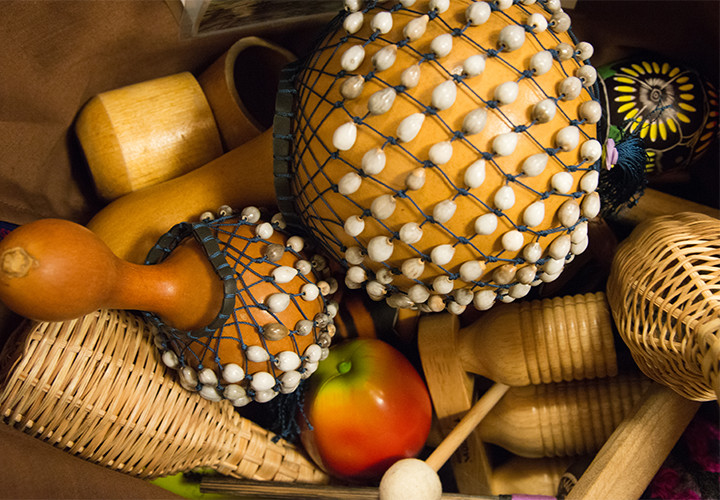

	<div id="oneCol">
    <div class="large-12 columns">
        <div class="medium-10 medium-offset-1 end columns">
        <h3>Beat It Percussion</h3>
			<p>"Beat It Percussion" is a group run by Lynn Kaye. Beat It's vision is to help people from many different community groups to share and take pleasure from music making.</p><p>These images were taken at a workshop in Pitt Rivers Museum, Oxford working with individuals involved in Creative Minds, Young Dementia UK 2016.</p>
		</div>
		<div class="center">

    <a href="./beat-it-002.html" title="View next Beat It photograph"></a>
    <br />
    <span class="links"><a href="./beat-it-002.html">next</a></span>
    </div>

</div>


